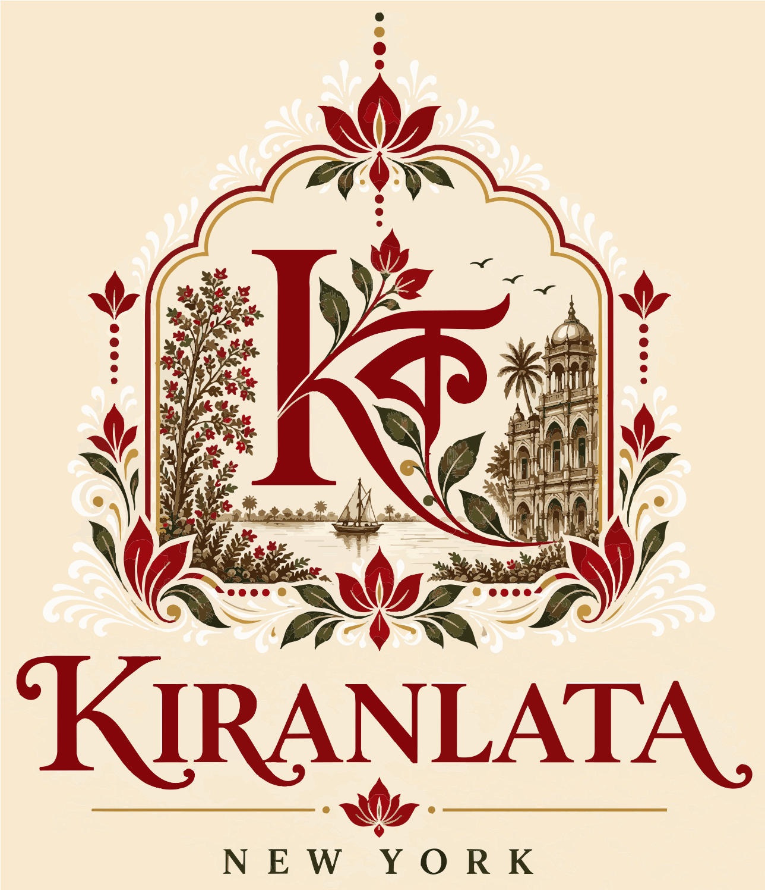
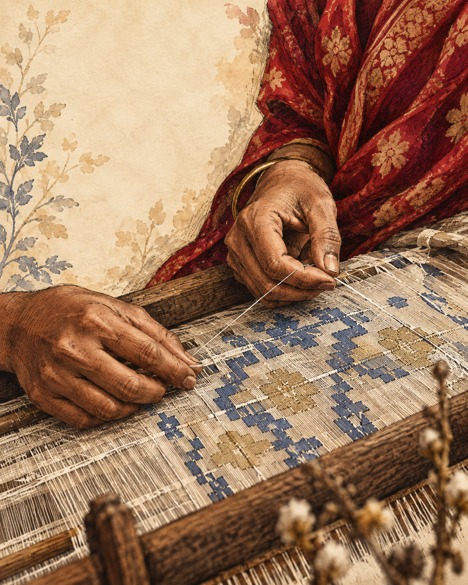

Handloom,
always
Woven by artisans on traditional looms, with the beautiful irregularity of the human hand.


Kiranlataকিরণলতা
From the looms of India & Bangladesh · To New York
Kiranlata brings distinctive handloom sarees—and the human stories within them—to women across the United States.
The Kiranlata promise
Not hundreds of designs. Small, carefully considered collections, where every saree has its own character and every thread can be traced back to craft.
Woven by artisans on traditional looms, with the beautiful irregularity of the human hand.
Breathable cotton and luminous silk. Never synthetic fibers.
Distinctive pieces selected for their technique, provenance and quiet character.
To be worn, loved, remembered—and one day passed into another pair of hands.
Before the saree
Tools, fibres and motifs shaped by generations of handloom practice.
Nature provides the beginning.
A precious fibre, hand-selected.
Heritage shines in every yard.
Generations of skill at work.
Carries the weft, weaves the story.
The rhythm behind the weave.
Tradition keeps turning.
Fish & rhythmic border
Narrative panel
Floral buti & kairi
Temple & yali
Kalka & floral vine
Checks & stripes

Each motif, placed by handThe slow intelligence of hands
A handloom saree begins with rhythm: warp held taut, shuttle passing, motifs counted thread by thread. It carries the time, knowledge and touch of the person who made it.
We work to connect that living tradition with the woman who will give the saree its next chapter.
Why handloom mattersSmall-batch seasonal edits
Five featured traditions offer a way into the collection. Explore all twelve weaves whenever you are ready.
The complete collection
Individual traditions
The seasonal edit
A closer look at five living traditions
Eastern India · Living handloom traditions
Khordha district · Rare colour traditions
Singular textile lineages
A boutique between two worlds
“Heritage is not kept behind glass. It is worn, loved, and lived in.”
Kiranlata is a New York-based, thoughtfully curated saree boutique bringing distinctive handloom and artisanal sarees from India and Bangladesh to women across the United States.
We believe a saree can hold a place, a maker, a memory—and still feel entirely your own. Our collections stay small so every piece can be known and chosen with care.
The first collection is coming
Join us for first access to small handloom releases, private previews and personal saree guidance from New York.
Begin an enquiry